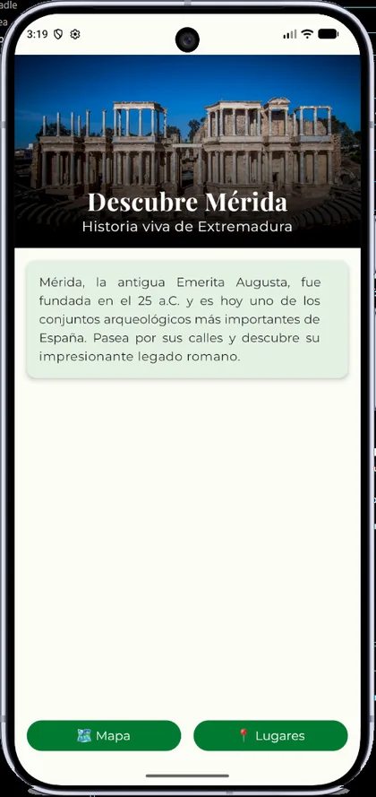
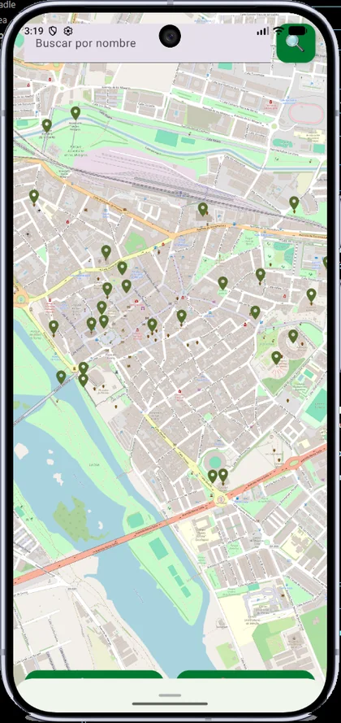
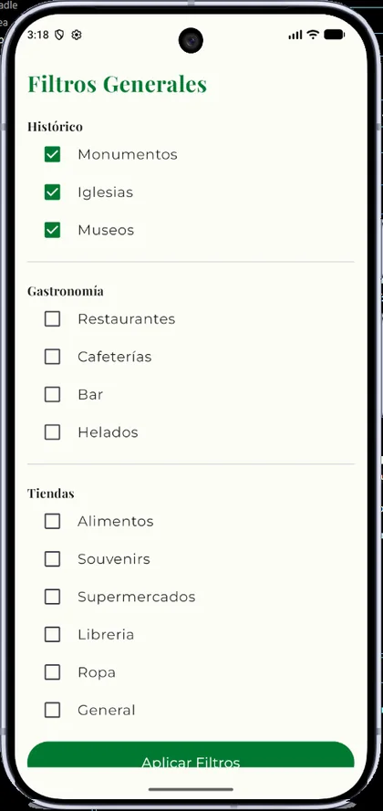
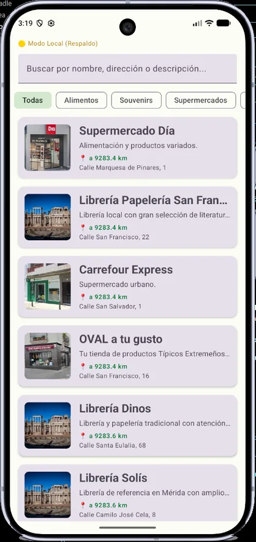
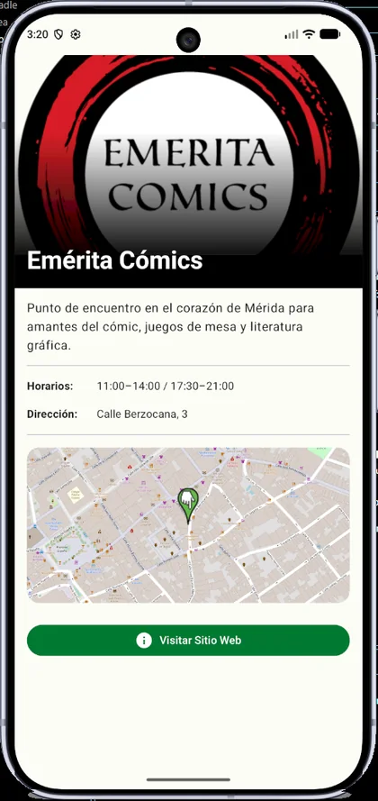
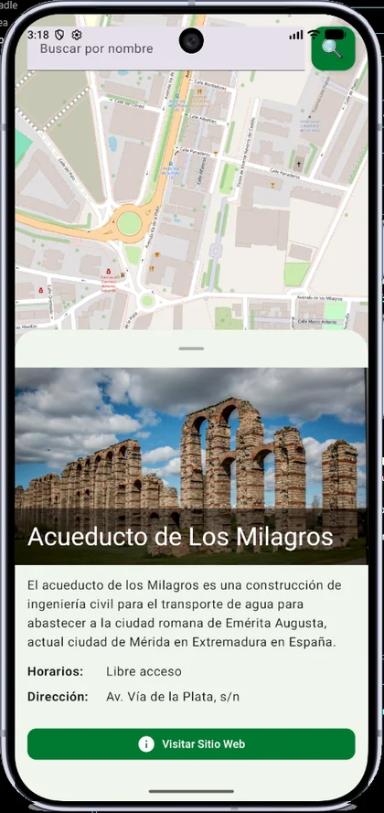

ExplorerSaga Extremadura
Guía turística de Mérida. Mi Trabajo de Fin de Grado.
App Android nativa en Kotlin y Jetpack Compose para descubrir monumentos, restaurantes y comercios de Mérida en listas y un mapa OpenStreetMap, respaldada por un backend Spring Boot que importa lugares desde Overpass API.
- DAM · Cesur
- TFG
- mapas sin coste
- OSM
- respaldo local
- Offline
01 El problema
La información turística de Mérida está repartida. Quería una guía visual y sencilla que juntara la historia de la ciudad con un mapa de lo que hay que ver, comer y comprar.
02 Arquitectura
03 Un fragmento del código
enum class DataSourceOrigin {
REMOTE,
LOCAL_FALLBACK,
NONE
}
data class PlacesResult(
val places: List<PlaceEntity>,
val origin: DataSourceOrigin
)
class PlaceRepository(private val context: Context) {
private val json = Json { ignoreUnknownKeys = true }
suspend fun getPlacesResult(category: String? = null): PlacesResult = withContext(Dispatchers.IO) {
try {
val remotePlaces = RetrofitClient.api.getPlaces(category)
if (remotePlaces.isNotEmpty()) {
PlacesResult(remotePlaces.map { it.toPlaceEntity() }, DataSourceOrigin.REMOTE)
} else {
val localPlaces = loadPlacesFromAssets()
val filteredLocal = if (category != null) localPlaces.filter { it.category.contains(category, ignoreCase = true) } else localPlaces
PlacesResult(filteredLocal, DataSourceOrigin.LOCAL_FALLBACK)
}
} catch (e: Exception) {
e.printStackTrace()
val localPlaces = loadPlacesFromAssets()
val filteredLocal = if (category != null) localPlaces.filter { it.category.contains(category, ignoreCase = true) } else localPlaces
PlacesResult(filteredLocal, DataSourceOrigin.LOCAL_FALLBACK)
}
}
// …
}
04 Capturas de la versión 1.0 (MVP)
-

Portada: historia de Mérida y acceso a mapa y lugares. -

Mapa OpenStreetMap con marcadores por categoría. -

Filtros por monumentos, gastronomía y tiendas. -

Lista de lugares. Si el servidor no responde, la app muestra el modo local. -

Ficha de un lugar con horarios, dirección y mapa. -

Ficha con foto del lugar, horarios y dirección sobre el mapa.
05 Qué he construido
- Cliente Android con MVVM, Navigation Compose y Material Design 3.
- Mapa OpenStreetMap (osmdroid) con marcadores por categoría y BottomSheet informativo.
- Backend Spring Boot hexagonal con API REST /api/v1/places, filtrado por categoría y Swagger.
- Importación idempotente de lugares desde OpenStreetMap (Overpass API), sin coste de licencias.
- Integración con Retrofit y modo local de respaldo (assets JSON) cuando el servidor no responde, con indicador de origen de datos y reintento.
- Proyecto llevado de principio a fin de forma autónoma.
Transparencia: el estado indicado arriba refleja el README del repositorio. Lo que está planificado se marca como tal; el código y la documentación completa están en GitHub.